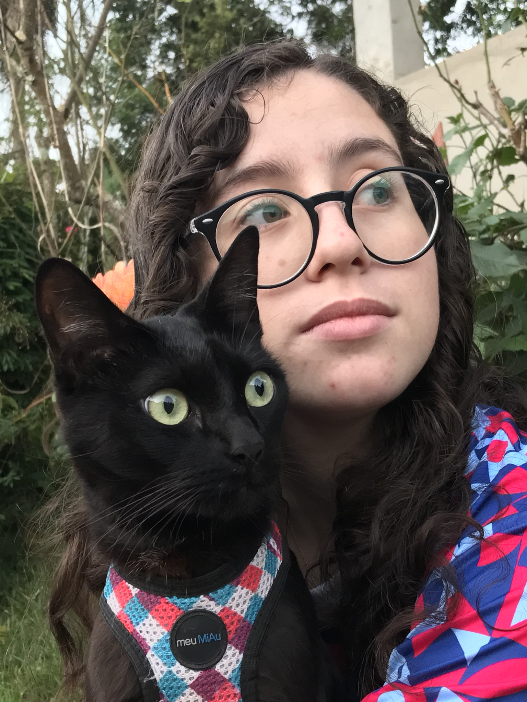

SOBRE
TUDO COMEÇOU
COM O LOGAN
Antes de existir um sistema, uma marca ou uma ideia de projeto, existia apenas um gatinho preto chamado Logan e uma história que mudou a forma como enxergamos a busca por um animal perdido. Foi a partir dessa história, da dor e da sensação de impotência diante de uma situação em que tudo o que podíamos fazer parecia pouco, que surgiu a vontade de transformar essa experiência em uma ferramenta de ajuda para outras pessoas.
Foi assim que nasceu o Sinaliza Pet.

Sobre o Sinaliza Pet
O Sinaliza Pet nasceu de uma história que começou com a perda de um companheiro muito especial. No dia 19 de maio de 2025, o Logan, um gatinho preto que fazia parte da nossa família desde março de 2021, desapareceu. Durante sete dias, fizemos o que estava ao nosso alcance para encontrá-lo: procuramos, publicamos nas redes sociais, compartilhamos sua foto, pedimos ajuda e tentamos alcançar o maior número possível de pessoas. No dia 26 de maio, finalmente encontramos o Logan, mas infelizmente já sem vida. Essa experiência deixou não apenas a dor da perda, mas também uma reflexão sobre como poderia ser mais fácil organizar e ampliar uma busca quando um animal desaparece.
As informações acabam espalhadas entre redes sociais, grupos de mensagens e publicações individuais, enquanto muitas pessoas podem ter visto o animal sem sequer saber que alguém está procurando por ele. Foi dessa experiência que nasceu o Sinaliza Pet: uma iniciativa criada para transformar essa sensação de impotência em uma ferramenta de ajuda. O projeto busca reunir pessoas em torno de uma mesma causa, criando um espaço onde animais desaparecidos possam ser divulgados, avistamentos possam ser sinalizados e informações possam alcançar quem realmente pode fazer a diferença. O gatinho preto presente na identidade do Sinaliza Pet representa o Logan e carrega consigo a origem de tudo isso.
Mais do que um símbolo, ele representa a memória de um animal que foi muito amado e a inspiração para criar algo que possa ajudar outras famílias a terem uma história diferente da nossa. O Sinaliza Pet nasce, portanto, de uma experiência pessoal, mas não pertence apenas a ela. Ele é pensado para todos aqueles que já perderam, encontraram, procuraram ou simplesmente pararam para ajudar um animal. Porque, quando um pet desaparece, cada pessoa que sinaliza, compartilha ou presta atenção pode fazer parte do caminho de volta para casa.